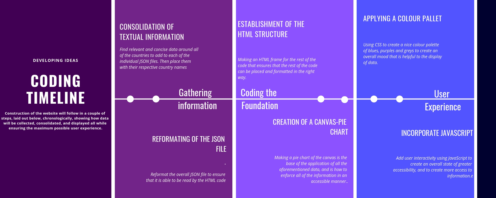

Developing Ideas
Success Criteria
Essentially, the three solutions to the three problems layer out in the previous sections are thinking about the problem creatively and doing something unique with the product. Overcoming limitations around text colour and interactiveness means that you need to create a website that is colourful, as well as concise and interactive. Things such as graphics and images now make up the modern state of web design, appealing to the needs and the urges of the users. Having an interactive system, where you can click and interact with the webpage. Using things such as graphics or click features or other components makes the user experience much better because the webpage is more interactive. Having these things also grabs the users attention and ensures that they remain on the page longer, giving them time to look at other parts of the page, including the embedded information.
Thus those will be the success criteria for my project, looking at textual, colour and interactive features in relation to how they support the user’s experience.
To address the issue of colour, the designer of the website must select a set of colours, usually with 2-3 tones and well as incremental colours to maximize the effectiveness. The use of certain shades are important to the overall feel of the page, where pastel colours give a softer and more loving feel, black colours with neon accents often give a punching of colour. The one thing that all of these have in com
mon though, is the use of colours that complement one another, and look compatible. Likewise, colours who do not match such as bright who does not complement such as orange and green detract from the user experience and reduces the ability for the user to understand the information. This looks like using a colour palette of bright warm complementary colours like pastel oranges and yellows or contrasting a red with blues and greens. In my case, however, I will be using a colour palette of purples blues and greys, all complementary and giving a modest feel to the overall website.
Having user interactivity inboxed terms of graphics as well as hover features is also a massive problem that many web designers face, Thus, to address this, using graphs especially interactive graphs would be extremely helpful for the user experience. These sill display data in a wat that ensures the user will easily be able to understand. This also means that they will be able to interact with the graphs, having them be able to better understand the issues at hand.
To address the issue of having text that is informative yet concise, this requires a balance of a surplus of information as well as minimal information. Having access to relevant and concise amounts of data is extremely important for those who look at the data. Individuals get highly overwhelmed when confronted with massive amounts of data and often skip past the relevant information to save time. Thus the way individuals and reporters alike have managed to combat this is to use shorter blurbs of concise information, to give them a “taste” of the information and then guide them to even more. This has aided modern-day journalism ensuring that all individuals have a better understanding of modern news, and also has made its way into web design.
To of this, I will be using the selection of certain criteria to display data. This means that the user can choose how much data to view, ensuring that they get as much or as little relevant data as possible.
Ensuring a balance of all of those above creates the best user experience, and having all of the aforementioned components in balance ensures that the user will be able to receive all of the information in a fashionable and effective manner. These are all needed and necessary because of the fact that the new wave of web design surrounding data presentation now recognize the needs of the user, especialy their response to things such as colour, and efficiency. Overall, the format and the sizing of pages now factor largely into how enjoyable, just as efficiency and having information near ensures that the user remains easily well informed. Missing any component would ensure that the overall website cannot efficiently or effectively fulfil its purpose. Thus for my website to be successful, it must meet all of the success criteria and balance them as to ensure a good user experience.
Design Mock-ups
Justification of Chosen Design
I feel as if the second option is better because of the fact that now we have greater access to data, without compromising User interactivity. This is due to the fact that we have information in a more clear manner, in relation to the rest of the world. Having countries show up when you click on a region, and the text shows up when you click on that country ensures that the user has the best user experience, and is able to visualise the data the most.
Furthermore, it gives a broader context towards the facts without overwhelming the user with excess amounts of data.It is important to recognize that balancing of enough information and consideration information relays on the user choosing what information that they chose to see, and here, having the user chose what data to display is externally important. Arguably, this solution provides necessary context, with detailed text on a country by country basis, as well as the looking at the rate of gender-based violence in relation to that of the rest of the world.
In a survey collected from 20 students, a large proportion of them support the modifications within the second one, especially the page layout, being cleaner and easier to understand. From this survey, we see that the user experience is greatly maximized when you have much less clutter on your website.
This website meets the success criteria much more than the first selection, due to it's maximization of the user experience in terms of textual elements as well as user interactivity.Choosing the second design maximizes the user experience in relation to the accessibility of information, the quality of the text, and ensures that the setup of the page minimizes the amount of clutter, and because of all of that, choosing the second plan in extremely justified.
Timeline
